Freelance Projects
Church Manager
AracnaTech (2026 – Present)
- Custom full-featured church website and member portal with zero external dependencies — pure Node.js, vanilla JavaScript, HTML, and CSS
- 14 public pages plus admin panel and pastor/member portal (ABC Connect) with role-based access (Pastor, Admin, Content Admin, Member)
- Config-driven banner system with seasonal theming, calendar system, and YouTube-integrated sermon library
- Theme engine with 12 color palettes and 22 font pairings, plus a landing page builder with scroll-triggered animations
- Secure authentication with PBKDF2 hashing, email-based 2FA, device trust, rate limiting, and comprehensive audit logging
- Connect portal with pathway tracking, messaging, parent consent for minors, and membership promotion workflow
- Planning Center API integration for member data sync
Tech: Node.js, Vanilla JavaScript, HTML5, CSS3, YouTube Data API, Planning Center API, SMTP, PBKDF2
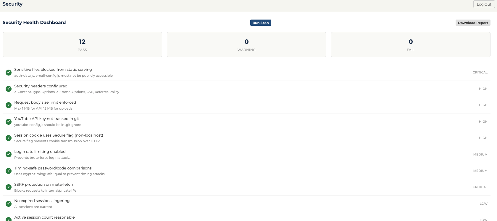
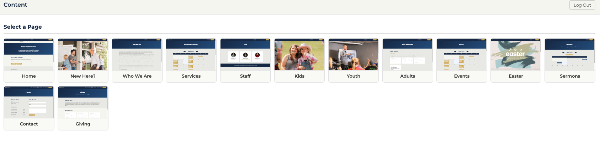
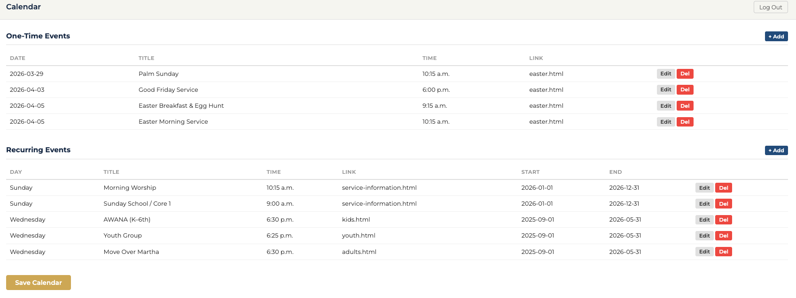
ProsHunter — Intelligent Sales Pipeline Platform
AracnaTech (2026 – Present)
- Full-stack prospect discovery and sales pipeline management tool for freelance web technology consulting
- Automated scanner identifies companies with outdated web tech and scores modernization opportunity
- Email outreach system with WYSIWYG compose, templates, IMAP reply detection, and Zoho SMTP delivery
- Proposal builder with auto-populated sections, branded PDF domain reports, and version tracking
- Zoho Calendar integration with OAuth2, US federal holiday support, and meeting scheduling
- 7-stage sales pipeline: Uninitiated → Contacted → Responded → Lead → Proposal → Won/Lost
Tech: Django, Next.js, React, Tailwind CSS, TypeScript, SQLite, BeautifulSoup, ReportLab
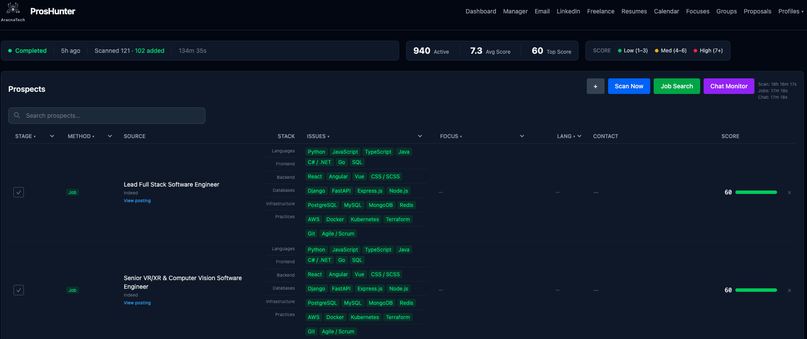
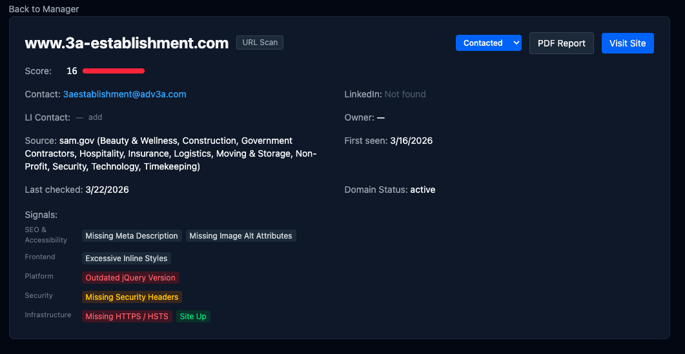
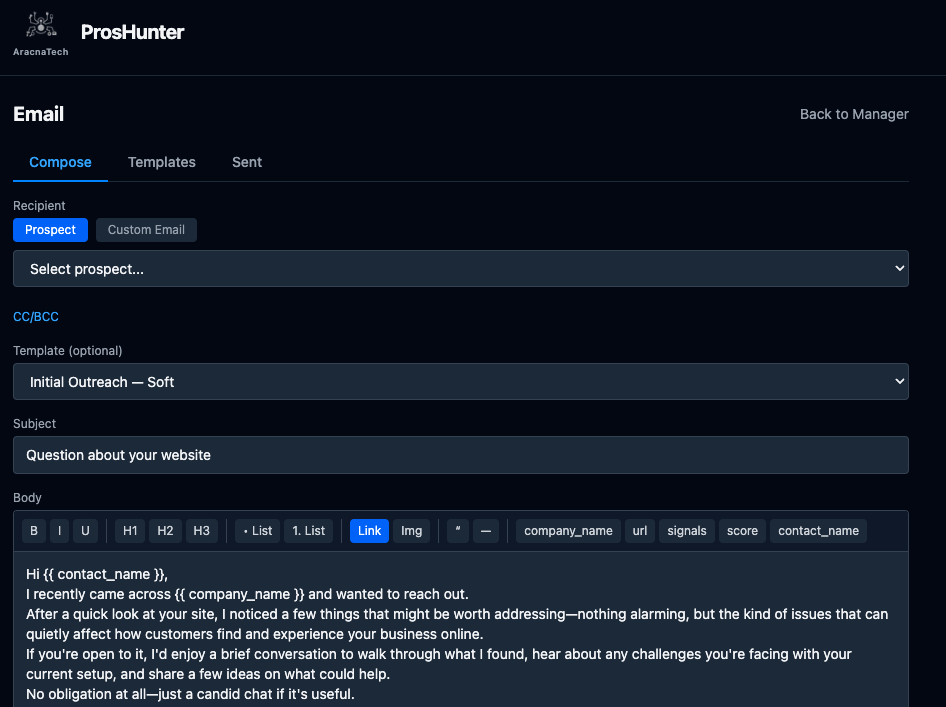
Timekeeping Tool
Full-Stack Developer — Non-for-Profit (Jan 2026 – Present)
- Migrating a legacy 2014 nonprofit web application to a modernized SaaS solution
- Built a multi-tenant time-tracking platform with dynamic form configuration, audit logging, and group-based permissions
- Implemented enterprise SSO via SAML/Azure AD and JWT session authentication
- Integrated Microsoft Graph API for Office 365 calendar sync and scheduling
- Developed PDF/document generation with WeasyPrint and AWS S3 storage
- Delivering frontend demos with interactive dashboards, signature workflows, and timesheet management
Tech: Next.js, React, TypeScript, Tailwind CSS, Radix UI, Recharts, FullCalendar, Django, Django REST Framework, PostgreSQL, JWT, SAML, Microsoft Graph API, AWS S3, WeasyPrint
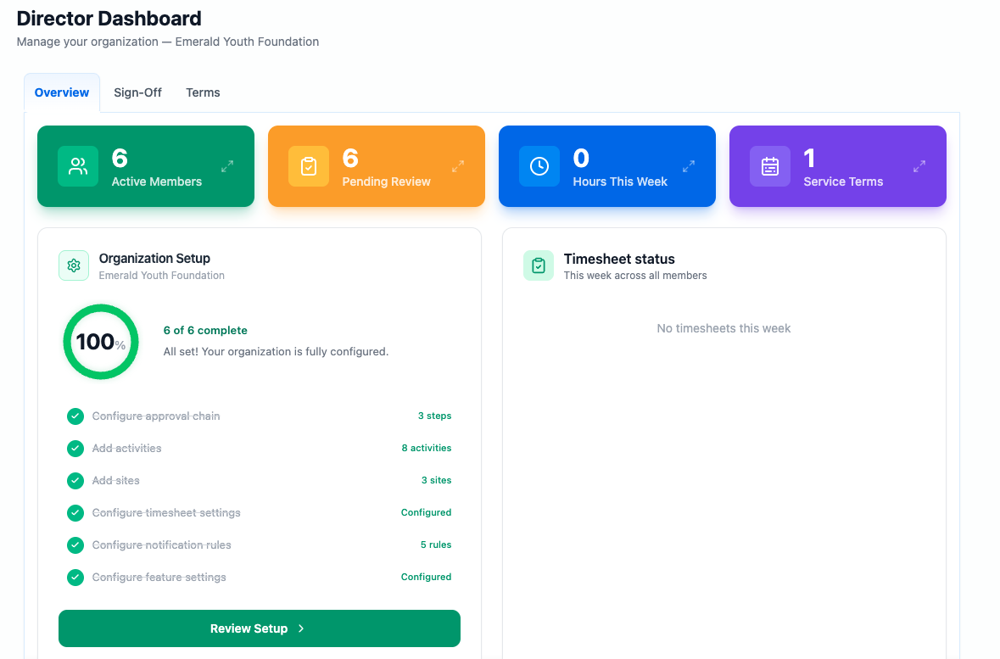
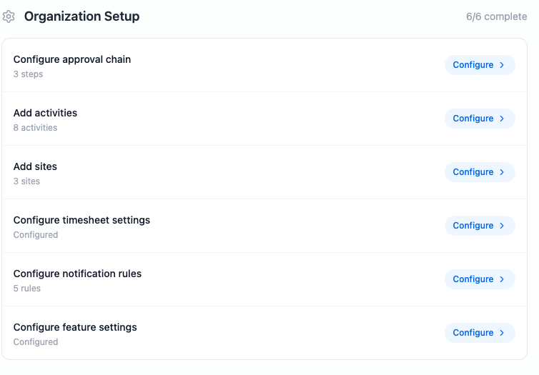
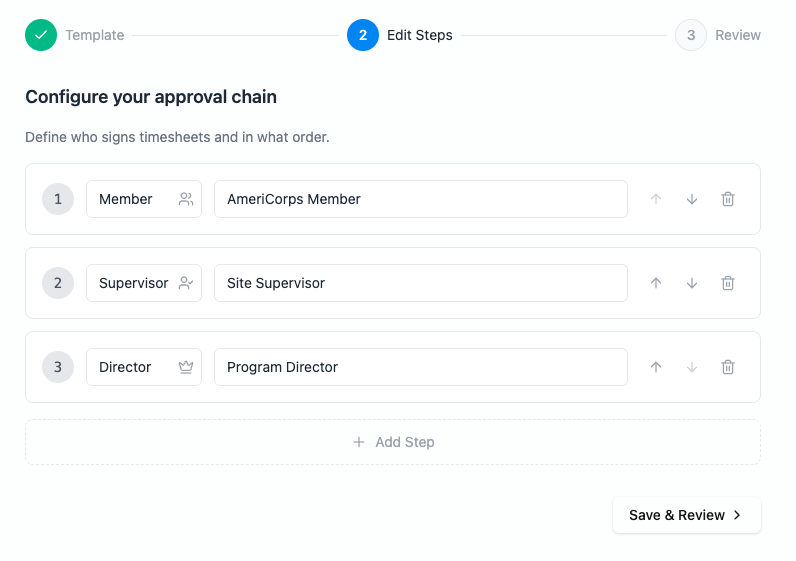
PerfPlater — System Performance Monitor
AracnaTech (2026 – Present)
- Desktop system performance monitor with real-time CPU, memory, disk, and network metrics in a dark-themed GUI
- Drill-down detail views with per-core CPU stats, RAM breakdown, per-interface network stats, and WinDirStat-style disk explorer
- Integrated security scanner with YARA malware detection rules and VirusTotal API lookups
- 5 built-in themes with native system tray integration and color-coded usage thresholds
- Cross-platform builds via PyInstaller with GitHub Actions CI/CD
Tech: Python, CustomTkinter, psutil, pystray, YARA, VirusTotal API, Pillow, PyInstaller, GitHub Actions
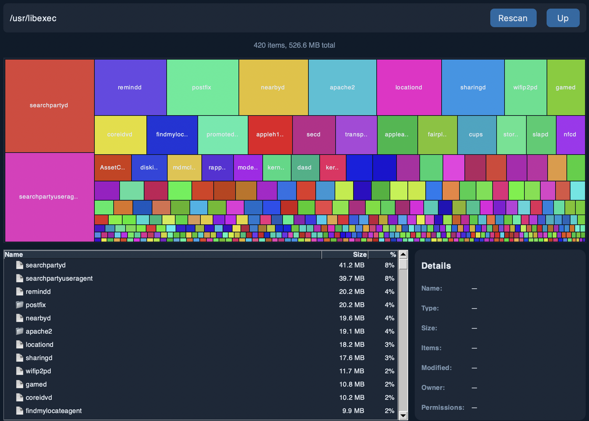
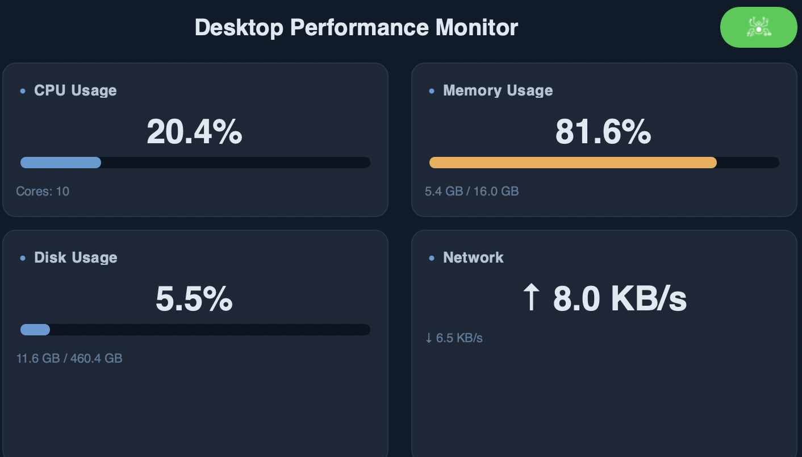
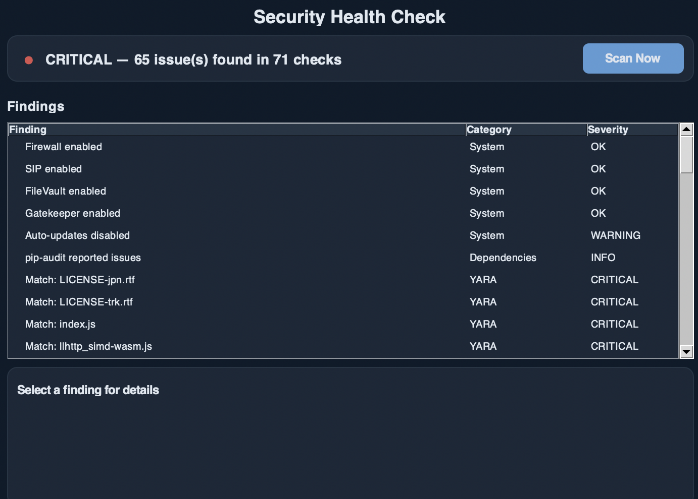
Employment Projects
New Relic Observability Platform Buildout
Casey's General Store — SRE & PowerShell Developer (July 2025 – Present)
- Engineered actionable metric configurations within New Relic to enhance observability
- Designed alerting conditions and policies for critical service monitoring
- Developed a log aggregator for centralized monitoring across production systems
Tech: New Relic, NRQL, Jira, Copilot
PowerShell Middleware & Script Modernization
Casey's General Store — SRE & PowerShell Developer (July 2025 – Present)
- Developed PowerShell scripts to function as middleware between vendor applications
- Converted legacy Batch scripts to modern PowerShell for production sales systems
- Conducted code reviews through Copilot to ensure quality and consistency
Tech: PowerShell, Batch, Copilot
SCOM 2022 Monitoring Deployment
University of South Florida — Cloud Engineer / Senior Server Admin (Feb 2023 – June 2025)
- Deployed full monitoring infrastructure utilizing SCOM 2022
- Configured monitoring across Microsoft Server environments
Tech: SCOM 2022, Windows Server
Jira Platform Rollout & Agile Adoption
University of South Florida — Cloud Engineer / Senior Server Admin (Feb 2023 – June 2025)
- Implemented and launched Jira platform facilitating Agile methodologies across the team
- Provided mentorship on Agile practices and Confluence documentation standards
Tech: Jira, Confluence, Agile
SQL Reporting to Power BI Migration
University of South Florida — Cloud Engineer / Senior Server Admin (Feb 2023 – June 2025)
- Migrated SQL Reporting Services to Power BI Server
- Built and administered Power BI Server environment
Tech: Power BI, SQL Server
TFS to Azure DevOps & File Share to Azure Migration
University of South Florida — Cloud Engineer / Senior Server Admin (Feb 2023 – June 2025)
- Transitioned Team Foundation Server to Azure VM
- Transferred file shares to Azure with file synchronization
Tech: Azure, TFS, Azure DevOps
300-Application Monitor Deployment
Wellmark Blue Cross/Blue Shield — Cloud Engineer / Monitoring Engineer (Aug 2014 – Aug 2022)
- Led the deployment of 300 application and infrastructure monitors within a four-month timeframe
- Developed streamlined dashboards for all 300 applications
Tech: SCOM 2012 R2, PowerShell
Full Dynatrace Migration
Wellmark Blue Cross/Blue Shield — Cloud Engineer / Monitoring Engineer (Aug 2014 – Aug 2022)
- Oversaw migration of all monitors and dashboards from SCOM to Dynatrace
- Configured OneAgent, extensions, Davis AI, tagging, management zones, alerting profiles, and SLOs
- Created PowerBI reports for Dynatrace data visualization
Tech: Dynatrace, PowerShell, Power BI
Splunk & CloudWatch Unified Dashboards
Wellmark Blue Cross/Blue Shield — Cloud Engineer / Monitoring Engineer (Aug 2014 – Aug 2022)
- Designed and implemented Splunk monitoring, alerting, and dashboards
- Integrated CloudWatch metrics to present AWS and Dynatrace data in a unified view
- Implemented monitoring and alerting for AWS Lambda functions
Tech: Splunk, AWS CloudWatch, AWS Lambda, Dynatrace